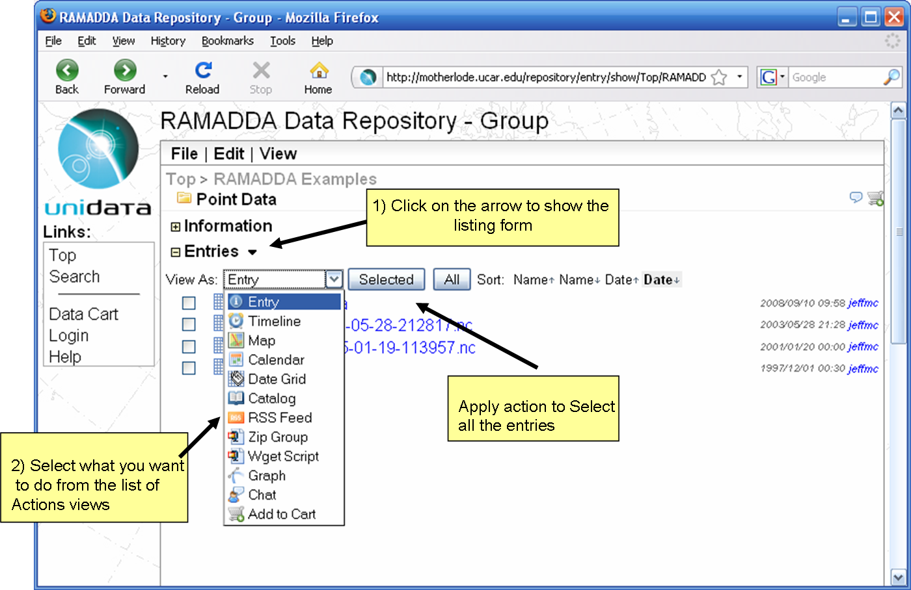

6 Managing Entries
RAMADDA has a number of facilities that make it easier to copy, move and
manage the entries in the repository.
6.0 Copying, Moving and Linking Entries
6.1 Listing
When you are viewing a Folder if you click on the arrow icon
the Entry List form will be shown:

Entry List Form